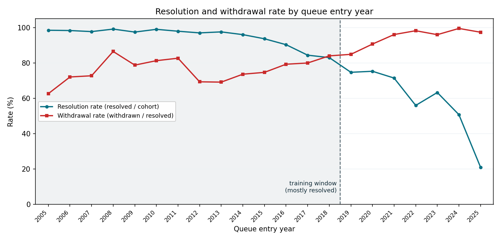
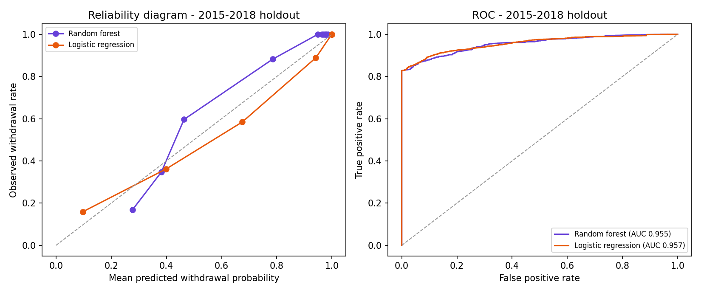

What this model does
For each … active projects in U.S. interconnection queues, the model estimates the probability that the project will be withdrawn before reaching commercial operation. Historically, the large majority of interconnection requests are eventually withdrawn, so the practical question for a developer is not whether the queue ahead of them is inflated, but by how much, and which projects are most likely to fall away.
How to reproduce this
The complete source code is available on GitHub.
Data
Training data is the Lawrence Berkeley National Laboratory “Queued Up” complete interconnection-request dataset (latest edition, data through the end of 2025), which compiles queue records from the seven ISO/RTOs and ~50 non-ISO utilities (~98% of U.S. installed generating capacity). Each record includes queue entry date, region, state, county, technology, capacity, interconnection service type, study/IA status, and final disposition (operational, withdrawn, suspended, or still active).
Defining the training population: the censoring problem
A naive approach — train on every project with a known outcome — is badly biased. Recent queue cohorts that have already resolved are almost entirely withdrawals (96–99% for 2021–2025 entrants), because projects that succeed take a median of ~3.5 years (90th percentile ~8 years) to reach operation, while withdrawals happen fast. The successes from recent cohorts are still pending, so the resolved subset of recent cohorts is unrepresentative.

We therefore train only on projects that entered the queue between 2000 and 2018 and have resolved (withdrawn or operational): … projects, of which … were withdrawn. Cohorts through 2018 are ≥83% resolved, so the remaining censoring is small. Predictions for active projects are estimates of their eventual outcome under historical resolution patterns.
Features and leakage control
Every feature is observable for an active project today, with one subtlety handled explicitly:
| Feature | Notes |
|---|---|
| Region | ISO/RTO or non-ISO region (9 categories) |
| State | Captures local permitting/siting conditions |
| Technology | Solar, wind, battery, gas, hybrids, etc. |
| Capacity (log MW) | Log-scaled nameplate capacity |
| Service type | NRIS / ERIS / both / other |
| Hybrid flag | Multi-technology projects (e.g., solar + battery) |
| IA executed | Has the project signed an interconnection agreement? (see below) |
| Queue entry year | Clipped to the 2000–2018 training range at prediction time (see limitations) |
The raw dataset’s status field encodes the final state of resolved projects — “Withdrawn” and “Operational” are literally the label — so it cannot be used directly. We instead derive a single milestone indicator, “reached IA execution” (status of IA Executed / Construction / Operational, or an IA date on record). For a resolved project this means it signed an IA before resolving; for an active project it means it has signed one so far. Signing an interconnection agreement is the single strongest de-risking event in the data, and this cumulative “milestone reached” encoding is leakage-free. County, developer, and utility identities are excluded to avoid memorizing small-sample entities.
A caveat that comes with this feature. In the through-2025 data, no completed project lacks an executed IA, so among resolved projects “has not reached IA” coincides almost perfectly with eventual withdrawal. The model leans heavily on this signal: it is by far the largest contributor, and the majority of active projects — those without an executed IA — therefore receive a high withdrawal probability (typically ~95–99%) with little differentiation among them. That is faithful to the historical record but overstates certainty for genuinely early-stage projects that may yet sign an IA; see Limitations.
Model: a random forest
The main model is a random forest (400 trees; scikit-learn). It is a flexible ensemble that discriminates well on this feature set. Its predicted probabilities are used as-is — there is no post-hoc calibration step. A consequence: the raw random-forest probabilities are only roughly calibrated (a tree ensemble tends to pull scores toward the interior), so individual probabilities should be read as a well-ordered risk score more than an exactly-calibrated frequency. The headline aggregate (“expected survivors”) sums these probabilities and so inherits that approximation.
Even though a random forest is not a glass-box model, every prediction in the explorer still carries an exact per-feature breakdown. We compute SHAP contributions (TreeExplainer, which is exact for tree ensembles) in probability space: a baseline equal to the average withdrawal rate, plus one contribution per feature, that sum exactly to the project’s predicted probability. Red contributions raise withdrawal risk, green lower it.
Evaluation: a single temporal holdout
The random forest (main model) and a logistic regression baseline (one-hot encoded categoricals, standardized numeric features) are trained on the identical feature set and evaluated on one temporal holdout: train on 2000–2014 entrants, test on 2015–2018 entrants — the realistic “predict the future” setting. We deliberately do not use k-fold cross-validation here: random folds mix queue cohorts across eras, and because withdrawal dynamics drift strongly over time, that lets a model “see the era” of its validation projects and overstates the skill that matters for forecasting today’s active queue.
On discrimination (AUC) the random forest and the logistic regression are essentially tied on the holdout; most of the predictable signal is structural (milestone reached, size, location, technology), so a linear model keeps pace. On calibration (ECE, Brier) the logistic regression’s raw probabilities are somewhat better behaved than the random forest’s, which is the expected cost of using the forest’s scores without a calibration step — a deliberate simplification. The random forest is kept as the main model for its flexibility and because its predictions come with exact SHAP explanations; the logistic regression is retained purely as a comparison.

What drives predictions
Global feature importances (mean absolute SHAP contribution, in probability points, across active projects):
Limitations — read before relying on this
- Queue-year extrapolation. The model is trained on 2000–2018 entrants; for newer active projects the queue-year feature is clipped at 2018. Post-2018 queues are more crowded and withdrawal rates have likely risen, so predictions for recent entrants may be, if anything, optimistic.
- Early-stage conditioning — the dominant caveat. Because no completed project in the data lacks an executed IA, the model treats “no IA reached” as near-certain withdrawal. The majority of active projects have not executed an IA and so receive a ~99% withdrawal probability with little differentiation among them. For genuinely early-stage projects that will eventually sign an IA, this overstates risk — these no-IA actives are the censored cases the model has no completed analogues for. Read individual predictions for no-IA projects as “high risk, undifferentiated,” and lean on the executed-IA subset for finer-grained ranking.
- Eventual, not dated, outcomes. Probabilities describe whether a project will ever be withdrawn, not when it will resolve or when surviving projects reach operation.
- Policy regime shift. FERC Order 2023 cluster reforms, tariff changes, and interconnection cost escalation post-date most of the training window.
- No project financials. The data contains no information on offtake agreements, site control, or developer balance sheets — major real-world drivers of completion.